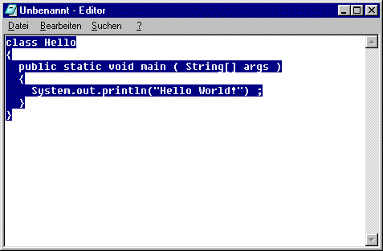

Notepad (Editor)
Sobald Notepad läuft, geben Sie einfach das Programm ein.
Hier ist Notepad mit dem Beispielprogramm:

Geben Sie die Zeichen einfach ein. Sie können sich mit der Maus oder den Pfeiltasten im Text bewegen. Verwenden Sie die Rücktaste oder die Entfernen-Taste, um Fehler zu löschen. Eine neue Zeile bekommen Sie, indem Sie die Return-Taste drücken.
Bei der Eingabe des Programms müssen Sie sich ganz genau an die Groß- und Kleinschreibung und die Interpunktion halten.
Jetzt müssen Sie die Datei auf der Festplatte abspeichern.
Den Menüpunkt dazu finden Sie in der Menüleiste oben in Ihrem Editor-Fenster.